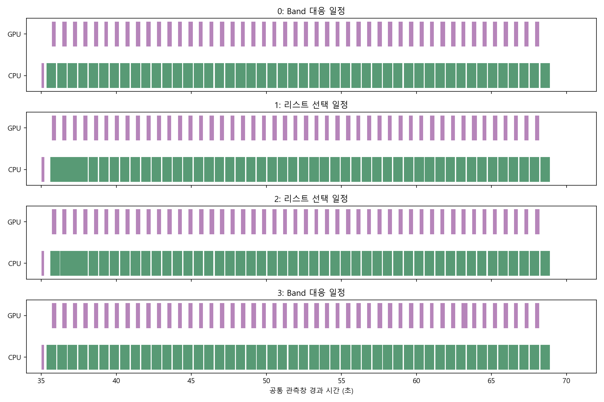
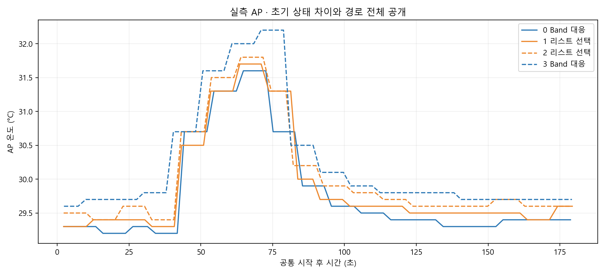
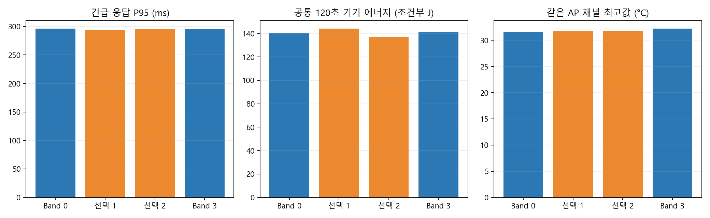
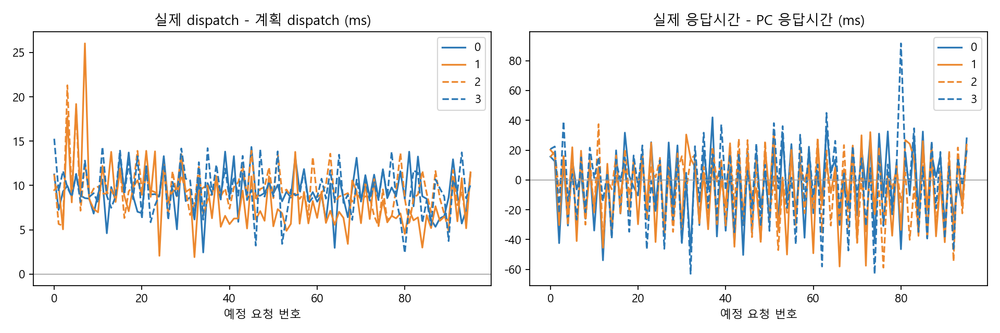
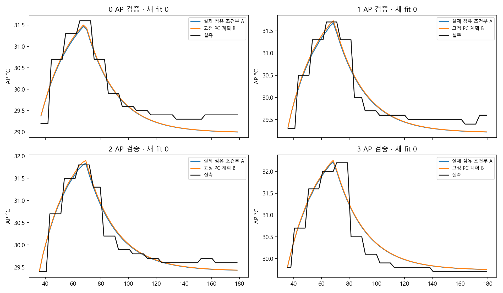

전체 세션 · 384 예정 요청과 실제 응답 · 두 순서 반전 쌍 · A/B 모형 오차 · 근거·누락·해시
| 순서 | PC 원 정책 | 완료/예정 | 긴급 기한 위반 | 일반 기한 위반 | 긴급 P95 ms | 조건부 J | 최고 AP °C | 초기 AP °C |
|---|---|---|---|---|---|---|---|---|
| 0 | Band 대응 | 96/96 | 0 | 0 | 295.944 | 140.290 | 31.6 | 29.3 |
| 1 | 리스트 선택 | 96/96 | 0 | 0 | 293.135 | 144.046 | 31.7 | 29.3 |
| 2 | 리스트 선택 | 96/96 | 0 | 0 | 295.790 | 136.781 | 31.8 | 29.5 |
| 3 | Band 대응 | 96/96 | 0 | 0 | 295.206 | 141.538 | 32.2 | 29.6 |




위 성적표 AP 최고는 공통0..120초에서 읽은 표본최고입니다. PC 정책판정은35..180초이므로 그 두 최고를 같은 기준으로 섞지 않습니다. 아래는 실제 확보한35..180초 AP 표본이며 끝의 미관측 부분을 실측으로 채우지 않았습니다. A/B 모형오차는 같은 실제 query시각에서 계산했습니다. J는 네 세션 모두 같은120초입니다.
| 순서 | 첫 AP표본 s | 마지막 AP표본 s | 180초까지 표본없는 edge s | 관측 표본최고 °C |
|---|---|---|---|---|
| 0 | 36.752 | 178.682 | 1.318 | 31.600 |
| 1 | 35.841 | 179.316 | 0.684 | 31.700 |
| 2 | 35.692 | 178.357 | 1.643 | 31.800 |
| 3 | 35.357 | 179.197 | 0.803 | 32.200 |
AP/SKIN 전체 관측창·gap·clock 불확실성 · HAL SKIN 보조채널 · 보고 개정과 원 판독 해시
보완한 A/B 모형오차 · 같은 실제 query시각의 예측. 원 판독의50초 AP입력 오류를 보존한 채, 실제 resident_baseline 시작부터 첫 도착35초 전 read_bracket만 사용했습니다. 원 AP의55초 gate는 그대로이며 계수 적합0, 초기 R/H 추정은 별도입니다.
HAL SKIN은 기기가 보고한 센서명 채널입니다. 최고 표면온도나 시뮬레이터의 지원 열 상태로 승격하지 않습니다.
평균과 범위는 관측한 두 쌍의 값일 뿐입니다. 같은 초기 AP가 같은 열 이력·시스템 활동·SOC를 보장하지 않으며, 효과·동등성·무효과를 통계적으로 증명하지 않습니다.
| 리스트−Band 지표 | 쌍 수 | 평균 | 최소 | 최대 |
|---|---|---|---|---|
| energy_j_conditional_mA | 2 | -0.5005453861020186 | -4.756663498006702 | 3.755572725802665 |
| ap_peak_c | 2 | -0.15000000000000213 | -0.40000000000000213 | 0.09999999999999787 |
| urgent_p95_ms | 2 | -1.112077499999998 | -2.808230999999978 | 0.5840759999999818 |
| normal_mean_response_ms | 2 | 7.730284124999969 | 6.532871437499921 | 8.927696812500017 |
| urgent_failures | 2 | 0 | 0 | 0 |
| normal_failures | 2 | 0 | 0 | 0 |
동결 replay 선택기의 판단 bracket은 온라인 롤링/PPO 계산 비용이나 제어 에너지 측정이 아닙니다.
계수 적합0, 실제 idle AP에서의 초기 R/H 추정만 사용했습니다. A는 실제 미래점유를 알고 하는 조건부 검증이며, B는 실험의 예정 trace를 재생한 동결PC계획입니다. 온라인 정책의 실제 판단 비용·효과를 측정한 결과가 아닙니다.
| 순서 | 예측 범위 | v3 AP MAE °C | 원 AP MAE °C | J120 예측-실측 J | 실제 idle 초기입력 초 |
|---|---|---|---|---|---|
| 0 | A 실제점유 조건부 | 0.242932 | 0.657936 | -2.078116 | 64.120 |
| 0 | B 동결 PC계획 | 0.235650 | 0.662528 | -1.632187 | 64.120 |
| 1 | A 실제점유 조건부 | 0.217391 | 0.664171 | -11.498997 | 62.695 |
| 1 | B 동결 PC계획 | 0.212854 | 0.676269 | -10.994612 | 62.695 |
| 2 | A 실제점유 조건부 | 0.159949 | 0.368195 | -1.494590 | 62.075 |
| 2 | B 동결 PC계획 | 0.160971 | 0.380694 | -0.954629 | 62.075 |
| 3 | A 실제점유 조건부 | 0.206012 | 0.376618 | 6.905102 | 62.640 |
| 3 | B 동결 PC계획 | 0.210216 | 0.378012 | 7.294092 | 62.640 |

공유값 검산: python -B -X utf8 -m tools.d1_overnight_device_verify. 이는 읽기 전용이며 기기·학습·새환경·새clock을 만들지 않습니다.